Sample Size Annotations
Ronald (Ryy) G. Thomas
2026-05-04
Source:vignettes/sample-size-annotations.Rmd
sample-size-annotations.RmdOverview
Displaying the sample size contributing to each plotted summary is
standard practice in clinical trial figures and longitudinal research.
The show_sample_sizes parameter in lplot()
places the count next to each point. The companion
sample_size_opts list controls appearance (font size,
color, transparency) and placement (horizontal and vertical
offsets).
Sample Data
We use two datasets throughout this vignette: one with continuous time and two treatment groups, and one with categorical visits and three treatment arms.
set.seed(42)
continuous_df <- data.frame(
subject_id = rep(1:60, each = 4),
week = rep(c(0, 4, 8, 12), times = 60),
score = NA,
arm = rep(
c("Drug", "Placebo"), each = 4, length.out = 240
)
)
for (s in unique(continuous_df$subject_id)) {
rows <- continuous_df$subject_id == s
bl <- 50 + rnorm(1, 0, 5)
is_drug <- continuous_df$arm[rows][1] == "Drug"
fx <- if (is_drug) c(0, 3, 6, 10) else c(0, 1, 1.5, 2)
continuous_df$score[rows] <- bl + fx + rnorm(4, 0, 3)
}
categorical_df <- data.frame(
subject_id = rep(1:45, each = 3),
visit = rep(
c("Baseline", "Month 3", "Month 6"), times = 45
),
outcome = NA,
treatment = rep(
c("Active A", "Active B", "Placebo"),
each = 3, length.out = 135
)
)
for (s in unique(categorical_df$subject_id)) {
rows <- categorical_df$subject_id == s
bl <- 30 + rnorm(1, 0, 4)
trt <- categorical_df$treatment[rows][1]
fx <- switch(trt,
"Active A" = c(0, 5, 9),
"Active B" = c(0, 3, 5),
"Placebo" = c(0, 1, 2)
)
categorical_df$outcome[rows] <- bl + fx + rnorm(3, 0, 2)
}Default Sample Sizes
Setting show_sample_sizes = TRUE with no additional
options places the count to the right of each point using default
styling (size 2.8, grey40, full opacity).
lplot(continuous_df,
score ~ week | arm,
cluster_var = "subject_id",
baseline_value = 0,
show_sample_sizes = TRUE,
title = "Default Sample Size Labels",
xlab = "Week",
ylab = "Score")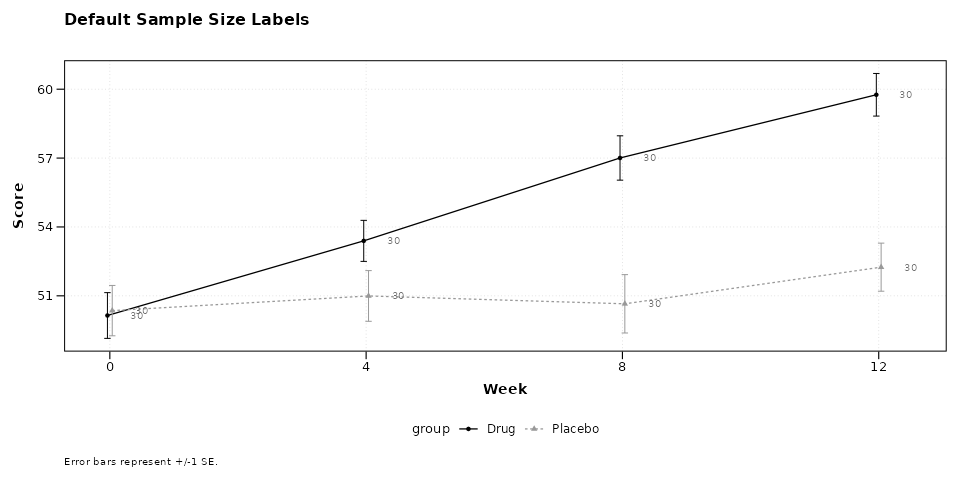
Adjusting Font Size
Larger labels may be appropriate for presentations; smaller labels work better for dense multi-panel figures.
lplot(continuous_df,
score ~ week | arm,
cluster_var = "subject_id",
baseline_value = 0,
show_sample_sizes = TRUE,
sample_size_opts = list(size = 4.5),
title = "Larger Labels (size = 4.5)",
xlab = "Week",
ylab = "Score")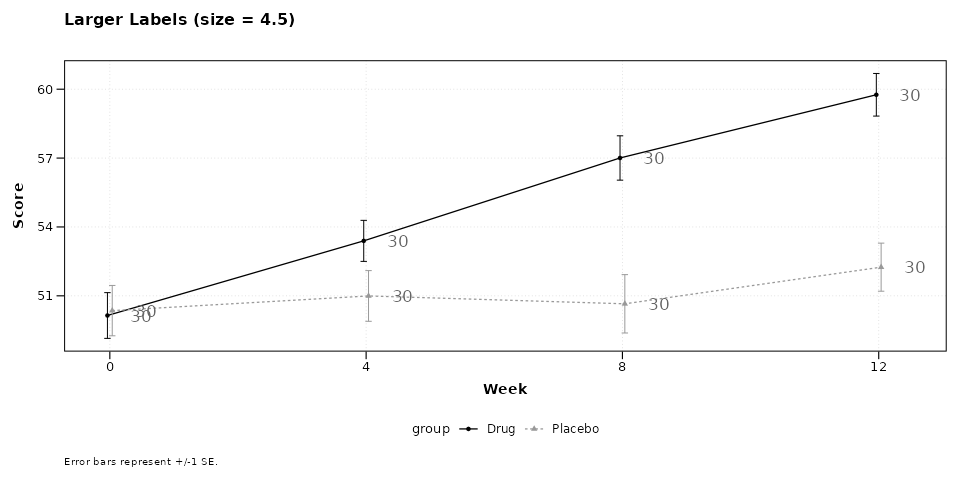
lplot(categorical_df,
outcome ~ visit | treatment,
cluster_var = "subject_id",
baseline_value = "Baseline",
show_sample_sizes = TRUE,
sample_size_opts = list(size = 2),
title = "Smaller Labels (size = 2)",
xlab = "Visit",
ylab = "Outcome")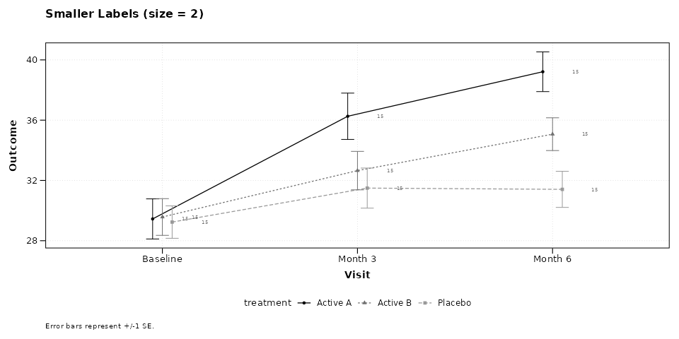
Changing Color
The label color can be set to any valid R color string. Using black increases contrast; using a muted tone keeps labels subordinate to the data.
lplot(continuous_df,
score ~ week | arm,
cluster_var = "subject_id",
baseline_value = 0,
show_sample_sizes = TRUE,
sample_size_opts = list(color = "black"),
title = "Black Labels",
xlab = "Week",
ylab = "Score")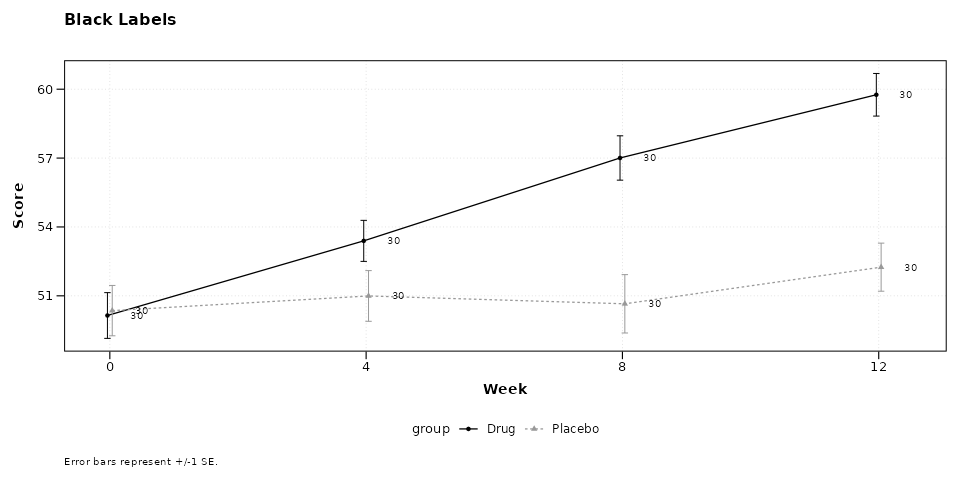
lplot(continuous_df,
score ~ week | arm,
cluster_var = "subject_id",
baseline_value = 0,
show_sample_sizes = TRUE,
sample_size_opts = list(color = "steelblue", size = 3.2),
title = "Steelblue Labels",
xlab = "Week",
ylab = "Score")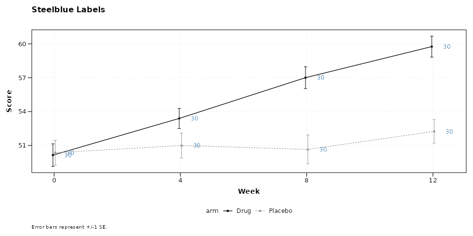
Horizontal Placement
The nudge_x option controls how far the label sits from
the point along the x-axis. Positive values shift right; negative values
shift left. For continuous x variables the unit is in data units; for
categorical x variables it is a fraction of category spacing.
lplot(continuous_df,
score ~ week | arm,
cluster_var = "subject_id",
baseline_value = 0,
show_sample_sizes = TRUE,
sample_size_opts = list(nudge_x = 0.8),
title = "Wider Horizontal Offset (nudge_x = 0.8)",
xlab = "Week",
ylab = "Score")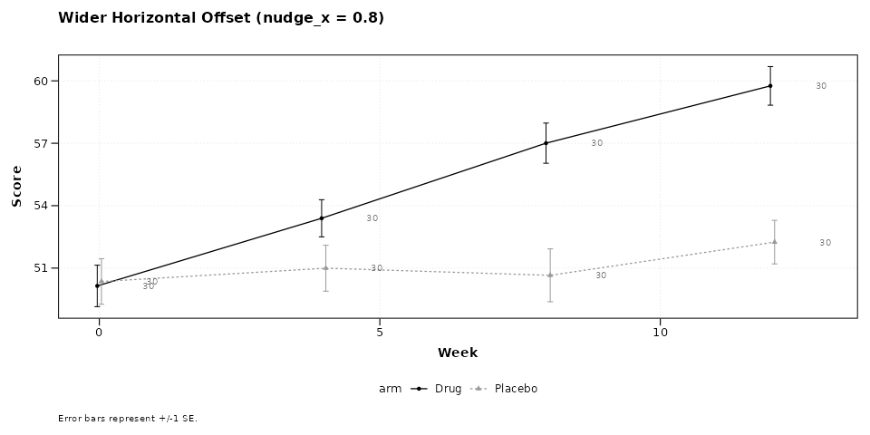
lplot(categorical_df,
outcome ~ visit | treatment,
cluster_var = "subject_id",
baseline_value = "Baseline",
show_sample_sizes = TRUE,
sample_size_opts = list(nudge_x = 0.05),
title = "Tight Horizontal Offset (nudge_x = 0.05)",
xlab = "Visit",
ylab = "Outcome")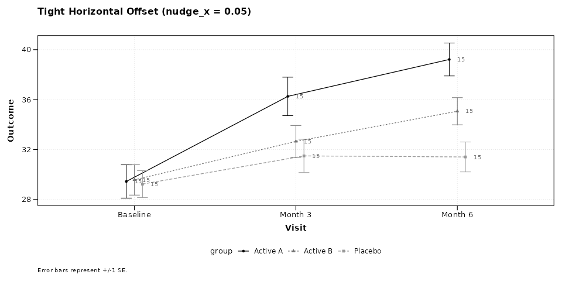
Vertical Placement
The nudge_y option shifts labels up (positive) or down
(negative) in data units. This is useful when error bars or ribbons
would otherwise overlap with the labels.
lplot(continuous_df,
score ~ week | arm,
cluster_var = "subject_id",
baseline_value = 0,
show_sample_sizes = TRUE,
sample_size_opts = list(nudge_y = 2),
title = "Labels Shifted Up (nudge_y = 2)",
xlab = "Week",
ylab = "Score")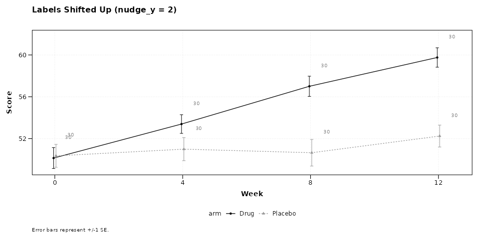
lplot(continuous_df,
score ~ week | arm,
cluster_var = "subject_id",
baseline_value = 0,
show_sample_sizes = TRUE,
sample_size_opts = list(nudge_y = -2),
title = "Labels Shifted Down (nudge_y = -2)",
xlab = "Week",
ylab = "Score")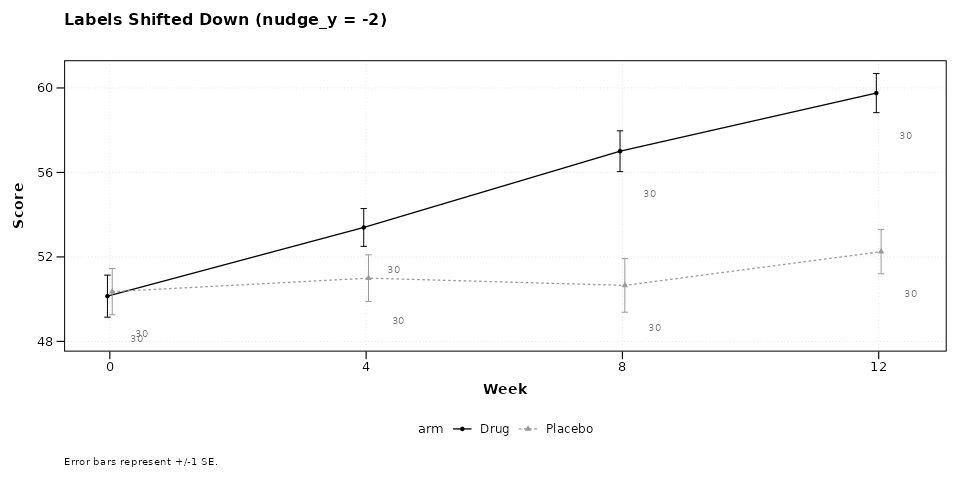
Combining Options
Multiple options can be set together. The following example uses a larger font, black color, reduced transparency, and a downward vertical offset.
lplot(categorical_df,
outcome ~ visit | treatment,
cluster_var = "subject_id",
baseline_value = "Baseline",
show_sample_sizes = TRUE,
sample_size_opts = list(
size = 3.5,
color = "black",
alpha = 0.6,
nudge_y = -1.5
),
title = "Combined: size, color, alpha, nudge_y",
xlab = "Visit",
ylab = "Outcome")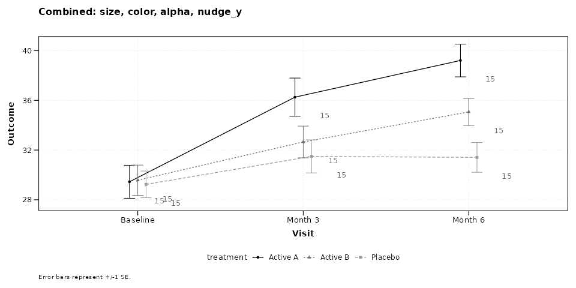
With Change-from-Baseline Plots
Sample size labels appear on both observed and change panels when
plot_type = "both". The same sample_size_opts
apply to both panels.
lplot(continuous_df,
score ~ week | arm,
cluster_var = "subject_id",
baseline_value = 0,
plot_type = "both",
show_sample_sizes = TRUE,
sample_size_opts = list(
size = 3, color = "grey30", alpha = 0.7
),
title = "Observed Values",
title2 = "Change from Baseline",
xlab = "Week",
ylab = "Score",
ylab2 = "Score Change")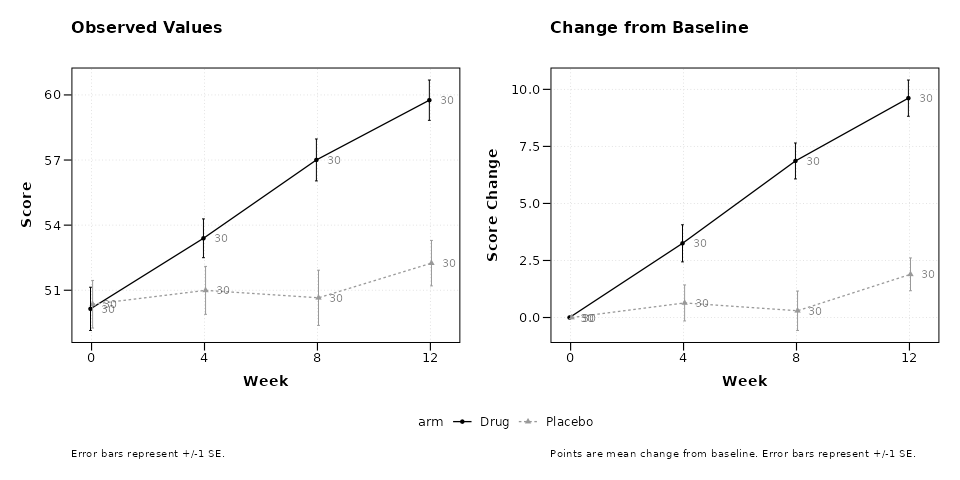
With BW Print Theme
The black-and-white theme pairs well with sample size annotations for figures destined for monochrome printing.
lplot(categorical_df,
outcome ~ visit | treatment,
cluster_var = "subject_id",
baseline_value = "Baseline",
theme = "bw",
plot_type = "both",
show_sample_sizes = TRUE,
sample_size_opts = list(
size = 3, color = "black", alpha = 0.5
),
title = "Observed (BW)",
title2 = "Change (BW)",
xlab = "Visit",
ylab = "Outcome",
ylab2 = "Outcome Change")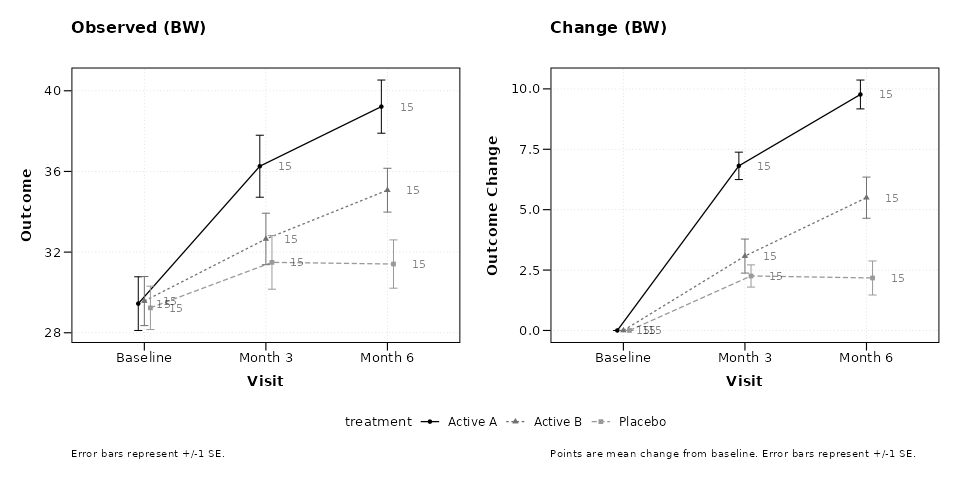
With Error Bands
When using ribbon-style error bands, shifting labels vertically can prevent overlap with the shaded region.
lplot(continuous_df,
score ~ week | arm,
cluster_var = "subject_id",
baseline_value = 0,
error_type = "band",
show_sample_sizes = TRUE,
sample_size_opts = list(
nudge_y = 3, size = 3, color = "grey20"
),
title = "Error Bands with Elevated Labels",
xlab = "Week",
ylab = "Score")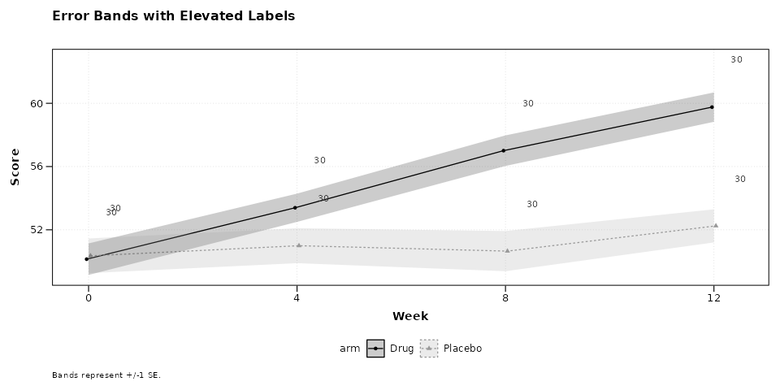
Parameter Reference
The sample_size_opts list accepts the following
elements. All are optional; omitted elements use their defaults.
| Option | Default | Description |
|---|---|---|
size |
2.8 | Font size in mm |
color |
“grey40” | Label color (any R color) |
alpha |
1 | Transparency, 0 (invisible) to 1 |
nudge_x |
auto | Horizontal offset from point |
nudge_y |
0 | Vertical offset from point |
When nudge_x is not specified, it is automatically
calculated as 3% of the x-axis range for continuous variables or 0.15
category units for categorical variables.
Session Info
#> R version 4.6.0 (2026-04-24)
#> Platform: x86_64-pc-linux-gnu
#> Running under: Ubuntu 24.04.4 LTS
#>
#> Matrix products: default
#> BLAS: /usr/lib/x86_64-linux-gnu/openblas-pthread/libblas.so.3
#> LAPACK: /usr/lib/x86_64-linux-gnu/openblas-pthread/libopenblasp-r0.3.26.so; LAPACK version 3.12.0
#>
#> locale:
#> [1] LC_CTYPE=C.UTF-8 LC_NUMERIC=C LC_TIME=C.UTF-8
#> [4] LC_COLLATE=C.UTF-8 LC_MONETARY=C.UTF-8 LC_MESSAGES=C.UTF-8
#> [7] LC_PAPER=C.UTF-8 LC_NAME=C LC_ADDRESS=C
#> [10] LC_TELEPHONE=C LC_MEASUREMENT=C.UTF-8 LC_IDENTIFICATION=C
#>
#> time zone: UTC
#> tzcode source: system (glibc)
#>
#> attached base packages:
#> [1] stats graphics grDevices utils datasets methods base
#>
#> other attached packages:
#> [1] ggplot2_4.0.3 dplyr_1.2.1 zzlongplot_0.2.0
#>
#> loaded via a namespace (and not attached):
#> [1] gtable_0.3.6 jsonlite_2.0.0 compiler_4.6.0 tidyselect_1.2.1
#> [5] jquerylib_0.1.4 systemfonts_1.3.2 scales_1.4.0 textshaping_1.0.5
#> [9] yaml_2.3.12 fastmap_1.2.0 R6_2.6.1 labeling_0.4.3
#> [13] generics_0.1.4 patchwork_1.3.2 knitr_1.51 tibble_3.3.1
#> [17] desc_1.4.3 bslib_0.10.0 pillar_1.11.1 RColorBrewer_1.1-3
#> [21] rlang_1.2.0 cachem_1.1.0 xfun_0.57 fs_2.1.0
#> [25] sass_0.4.10 S7_0.2.2 cli_3.6.6 withr_3.0.2
#> [29] pkgdown_2.2.0 magrittr_2.0.5 digest_0.6.39 grid_4.6.0
#> [33] lifecycle_1.0.5 vctrs_0.7.3 evaluate_1.0.5 glue_1.8.1
#> [37] farver_2.1.2 ragg_1.5.2 rmarkdown_2.31 tools_4.6.0
#> [41] pkgconfig_2.0.3 htmltools_0.5.9